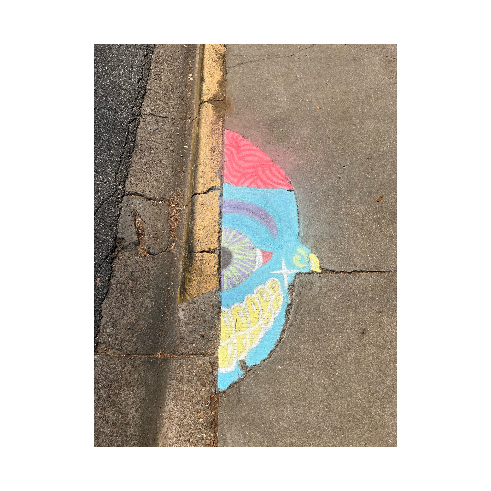
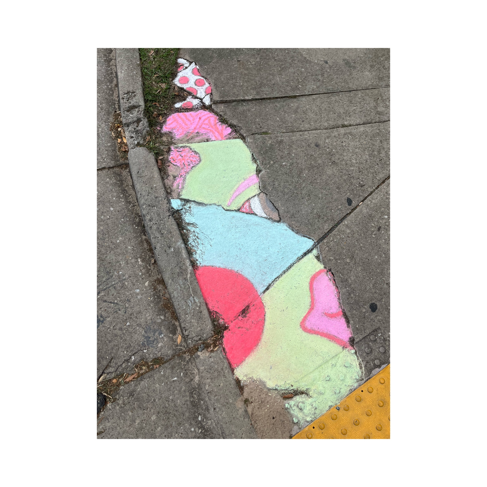
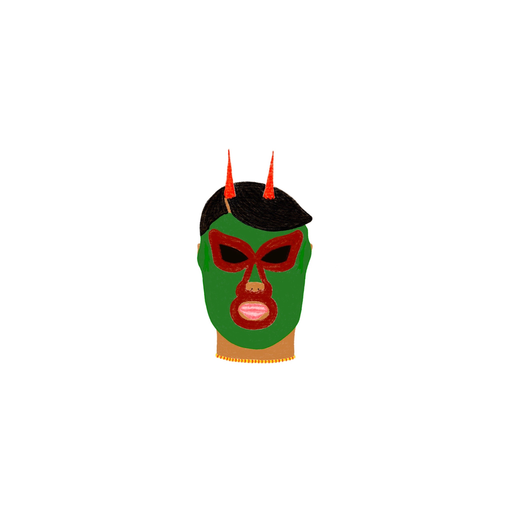

Title: Between Borders
The art book, Between Borders, explores the duality and liminality of Mexican-American identity –– the push and pull, the mutual feelings of belonging and rejection that come with two clashing worlds. The book was created using construction paper, bristol paper, and book board. The book also includes screen printed elements.

Title: Skateboard
The design on the skateboard was screen printed by using balloons. The idea behind this work was to successfully screen print a design onto a skateboard.
 Title: Untitled
It’s human nature to look down while walking, which often causes us to miss the beauty of our surroundings. The Chalk Drawings were created to bring color – life – to the ground. Specifically drawn on cracks, the drawings also showcase how even broken, imperfect things remain beautiful. This project not only reminds us of the world’s hidden joys, but also bridges the connection between art and urban development.
